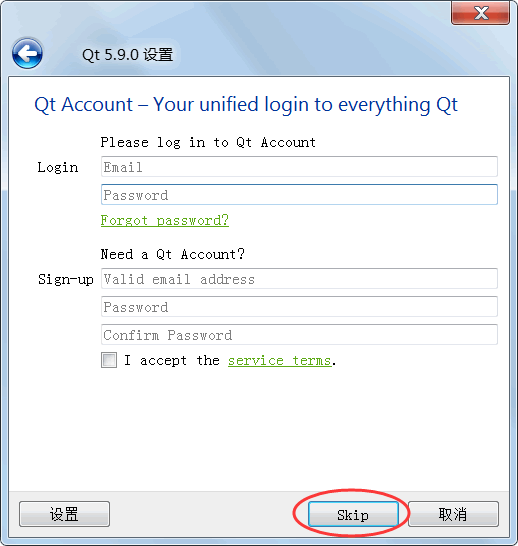
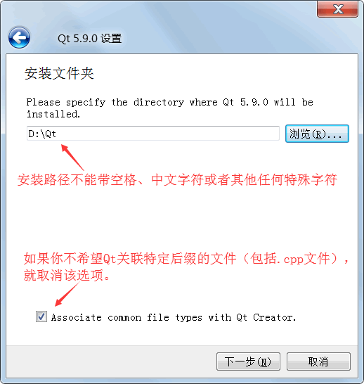
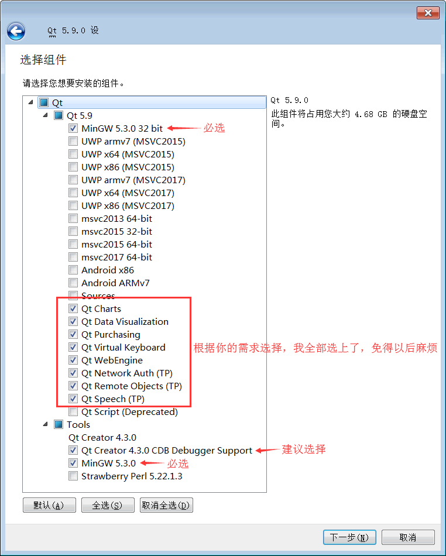
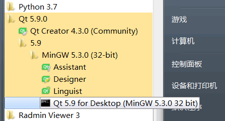

图解Qt安装（Windows平台）
本节介绍 Qt 5.9.0 在 Windows 平台下的安装，请提前下载好 Qt 5.9.0。不知道如何下载 Qt 的读者请转到：Qt下载（多种下载通道+所有版本）
目前较高版本的 Qt 仅支持 Win7 及其以后的操作系统，不支持 Win XP；使用 Win XP 的读者请安装 Qt 5.5.1 之前的版本。
Qt 占用的存储空间很大，安装之前建议先准备好 8GB 以上的磁盘空间。对于目前 Qt 最新版开发环境，如果不安装源代码包，实际占用大约 5.5GB；如果选择安装源码包，大约占用 7.5GB。
双击下载得到的 qt-opensource-windows-x86-5.9.0.exe 即可开始安装。Qt 的安装过程和普通的 Windows 软件一样，按照向导进行操作即可。
关于 Qt 的安装需要说明以下几点。
Qt 允许用户自定义安装路径，但是请注意，安装路径不能带空格、中文字符或者其它任何特殊字符。
另外，该界面还会询问是否关联特定的文件类型。如果关联（默认是关联的），特定后缀的文件（包括 .cpp 文件）默认使用 Qt 打开。我喜欢使用纯文本编辑器（例如 Sublime Text）来打开 C++ 源文件，所以我取消了该选项，读者根据自己的实际情况定夺。
Qt 的安装组件分为两部分：一部分是“Qt 5.9”分类下的，该分类包含的是真正的 Qt 开发库组件；另一部分是“Tools”分类下的，该分类包含的是集成开发环境和编译工具。
选择完了组件，根据向导一步一步操作就可以了。安装完成后，在 Windows“开始”菜单中会看到 Qt 5.9.0 程序组。
目前较高版本的 Qt 仅支持 Win7 及其以后的操作系统，不支持 Win XP；使用 Win XP 的读者请安装 Qt 5.5.1 之前的版本。
Qt 占用的存储空间很大，安装之前建议先准备好 8GB 以上的磁盘空间。对于目前 Qt 最新版开发环境，如果不安装源代码包，实际占用大约 5.5GB；如果选择安装源码包，大约占用 7.5GB。
双击下载得到的 qt-opensource-windows-x86-5.9.0.exe 即可开始安装。Qt 的安装过程和普通的 Windows 软件一样，按照向导进行操作即可。
关于 Qt 的安装需要说明以下几点。
1) 注册和登录
Qt 在安装过程中会提示用户进行注册和登录，不用理会，跳过（Skip）即可，实际开发时不需要登录。

图1：Qt 安装过程中提示用户注册
图1：Qt 安装过程中提示用户注册
2) 安装路径和关联文件

图2：指定 Qt 安装路径
图2：指定 Qt 安装路径
Qt 允许用户自定义安装路径，但是请注意，安装路径不能带空格、中文字符或者其它任何特殊字符。
另外，该界面还会询问是否关联特定的文件类型。如果关联（默认是关联的），特定后缀的文件（包括 .cpp 文件）默认使用 Qt 打开。我喜欢使用纯文本编辑器（例如 Sublime Text）来打开 C++ 源文件，所以我取消了该选项，读者根据自己的实际情况定夺。
3) 选择安装组件
Qt 安装过程中最关键的一步是组件的选择，请看下图：

图3：Qt 组件
图3：Qt 组件
Qt 的安装组件分为两部分：一部分是“Qt 5.9”分类下的，该分类包含的是真正的 Qt 开发库组件；另一部分是“Tools”分类下的，该分类包含的是集成开发环境和编译工具。
| “Qt 5.9”分类下的开发组件 | |
|---|---|
| 组件 | 说明 |
| MinGW 5.3.0 32 bit | 编译器模块。MinGW 是 Minimalist GNU for Windows 的缩写，MinGW 是 Windows 平台上使用的 GNU 工具集导入库的集合。是本教程使用 MinGW 编译，所以必须安装。 |
| UWP *** | UWP 是 Windows 10 中 Universal Windows Platform 的简称，有不同编译器类型的 UWP，属于 MSVC 编译器生成的 Qt 库。如果不是开发 UWP 应用程序，就不需要，直接忽略。 |
| MSVC *** | 针对 Windows 平台上的 MSVC 编译器的 Qt 组件，如 msvc2015 32-bit 和 msvc2015 64-bit 等。安装该组件需要计算机上已经安装相应版本的 Visual Studio。如果你不使用 MSVC 编译器进行开发，就不用安装。本教程使用 MinGW 编译组件，所以不用安装 MSVC *** 组件。 |
| Android *** | 这是针对安卓应用开发的 Qt 库，如果读者有安卓开发这方面需求可以自己选择安装，一般情况下用不到。 |
| Sources | Qt 的源代码包，除非你想阅读 Qt 的源码，否则不用安装。 |
| Qt *** |
Qt 的附加模块，大部分建议安装，这些附加模块括号里的 TP 是指 Technology Preview ，技术预览模块的意思，还处在功能测试阶段，不是正式版模块；附加模块括号里的 Deprecated 是指抛弃的旧模块，兼容旧代码使用的，一般用不到。这些附加模块读者可以选择部分或都勾选了安装，占用空间不大。 部分组件说明：
|
| “Tools”分类下的开发组件 | |
| 组件 | 说明 |
| Qt Creator 4.3.0 | 这是集成开发环境，强制安装的，以后所有的项目和代码都在 Qt Creator 里面新建和编辑。 |
| Qt Creator 4.3.0 CDB Debugger surpport | 用于和 CDB 调试工具对接，默认安装，一般用于调试 VC 编译的 Qt 程序。 |
| MinGW 5.3.0 | 这是开源的编译器套件，这本教程必须用到的，需要读者勾选安装。 |
| Strawberry Perl 5.22.1.3 | 用于编译 Qt 源代码的 Perl 开发环境，不需要安装。如果读者以后用到，也可以另外手动安装，在搜索引擎搜索 Strawberry Perl 关键词，去 Strawberry Perl 官网下载最新的安装包是一样用的。 |
选择完了组件，根据向导一步一步操作就可以了。安装完成后，在 Windows“开始”菜单中会看到 Qt 5.9.0 程序组。

图4：Qt 5.9.0 所包含的程序
图4：Qt 5.9.0 所包含的程序
| 程序 | 说明 |
|---|---|
| Qt Creator 4.6.2 (Enterprise) | Qt 的集成开发环境，本教程就使用它来创建和管理 Qt 项目。 |
| Assistant（Qt 助手） | 用来查看帮助文档，已被集成在 Qt Creator 中。 |
| Designer（Qt 设计师） | 图形界面可视化编辑工具，已被集成在 Qt Creator 中，在 Qt Creator 中编辑或创建界面文件时，就可以自动打开。 |
| Linguist（Qt 语言家） | 多国语言翻译支持工具，可以用来编辑语言资源文件，在开发多语言界面的应用程序时会用到。 |
| Qt 5.11.1 for Desktop (MinGW 5.3.0 32bit) | Qt 命令行工具，用来配置 Qt 开发环境（主要是设置 PATH 变量）。 |
关注公众号「站长严长生」，在手机上阅读所有教程，随时随地都能学习。内含一款搜索神器，免费下载全网书籍和视频。

微信扫码关注公众号